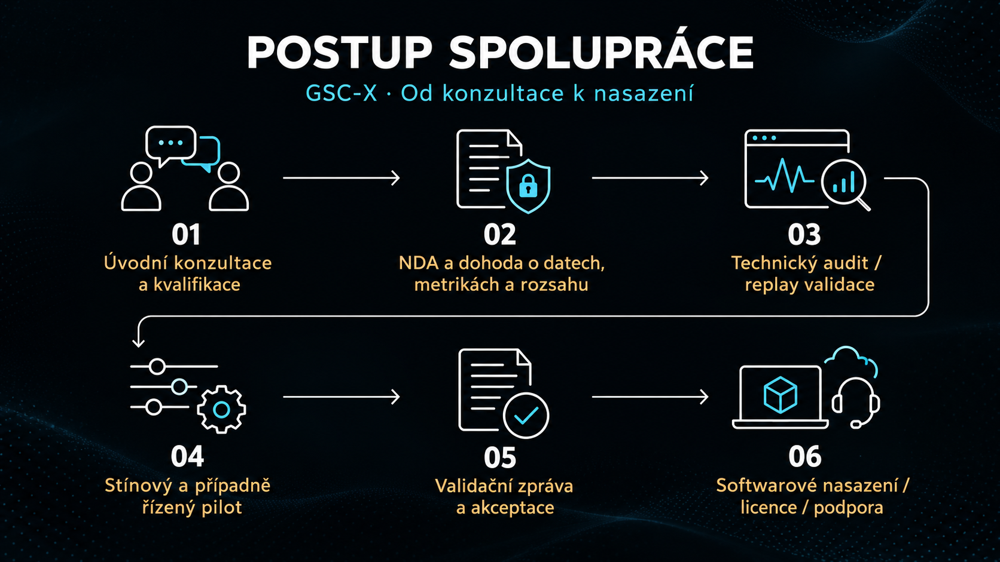

Měřitelný přínos pro váš provoz
GSC-X Executive Kernel je softwarový algoritmus pro prediktivní monitoring, podporu rozhodování a adaptivní stabilizaci. Pomáhá identifikovat nestabilitu dříve, než přeroste ve výpadek, energetickou ztrátu, degradaci zařízení nebo provozní selhání.
Technologie vychází z veřejných benchmarků, validačních reportů, vědeckých datasetů a reprodukovatelného výzkumu napříč inženýrskými, infrastrukturními a vědeckými obory. Přínos pro konkrétního zákazníka ověřujeme samostatně vůči jeho výchozímu řešení a předem dohodnutým metrikám.
Technický audit stability
Odhalte skrytou nestabilitu a ověřte potenciál zlepšení na vlastních datech. Audit probíhá offline nebo přehráním historické telemetrie, bez zásahu do řízení stroje.
- Reprodukce současného řešení a porovnání s GSC-X
- Vyhodnocení stability, rizik, rezervy zotavení a dohodnutých KPI
- Technická zpráva s výsledky, omezeními a doporučením GO / NO-GO
- Návrh integrační cesty a dalšího postupu
Pokud audit GSC-X neprokáže měřitelný přínos podle předem dohodnutých kritérií, zákazník poplatek za audit neplatí.
Podmínky zahrnují konkrétní data, výchozí řešení, metriky a kritéria úspěchu. Při navazujícím dohodnutém pilotu může být úspěšný audit započten do jeho ceny.
Replay validace a digitální dvojčata
Ověřte technická rozhodnutí před nasazením. Historické záznamy, digitální dvojčata a scénáře „co kdyby“ umožňují porovnat varianty řízení, ověřit reakci na poruchy a vyhodnotit náklady i provozní rezervu.
Výstupem je reprodukovatelné porovnání s výchozím řešením, popis scénářů a doporučení pro další ověření.
Pilotní projekty
Pilot převádí výsledky auditu do prostředí zákazníka. Nejprve může běžet ve stínovém režimu: GSC-X přijímá živou nebo téměř živou telemetrii, predikuje a doporučuje, ale proces neřídí. Řízený pilot navazuje pouze v dohodnutých mezích a s výslovně schválenými oprávněními.
- Méně prostojů a vyšší dostupnost zařízení
- Vyšší produktivita a nižší spotřeba energie
- Dřívější rozpoznání degradace a lepší rozhodování o údržbě
- Ověření kvality dat, falešných alarmů, robustnosti a integračních rozhraní
Konkrétní cíle, metriky a akceptační testy stanovíme předem. Bezpečnostní vrstvy a zákazníkem schválené ochrany zůstávají aktivní.
Hodnocení technologií a technické poradenství
Executive Kernel vyhodnotíme na vašich datech nebo ve vašem testovacím prostředí. Pomůžeme s návrhem integrace, prediktivní diagnostikou, spolehlivostním inženýrstvím, validací digitálních dvojčat a architekturou exekutivního rozhodování.
Rozsah může zahrnovat také optimalizaci výkonu, doménové mapování telemetrie a přípravu reprodukovatelných testů.
Dodání softwaru a integrace
Naše služby jsou softwarové a primárně poskytované vzdáleně. Dodáváme software, konfiguraci, rozhraní, dokumentaci, testovací postupy a vzdálenou podporu. Lokální instalaci a připojení ke stávající infrastruktuře provádí zákazník nebo jeho autorizovaný IT či automatizační tým.
GDS Control Systems je produktová rodina postavená kolem GSC-X Core. Její architektura je definována; standardizovaný nasaditelný balík V1 je vývojový milník. První zákaznická ověření dodáváme prostřednictvím jasně vymezených auditních a pilotních balíků.
Bez vendor lock-in. Bez povinné výměny stávající infrastruktury.
Orientační ceny
Konečnou cenu stanovíme dohodou podle rozsahu, složitosti, kritičnosti systému, datové připravenosti a požadavků na validaci. Následující částky slouží pro první představu o rozpočtu; nejde o pevný ceník.
| Služba | Standardní projekty | Energetika / kritická infrastruktura | Fúze / jaderné aplikace / velké instituce |
|---|---|---|---|
| Technický audit | od €5 000 | €15 000–30 000+ | od €25 000 |
| Pilotní projekt | €25 000–50 000+ | €75 000–150 000+ | €100 000–250 000+ |
| Softwarové nasazení | €25 000–150 000+ | od €100 000 | Individuálně |
Vybrané úvodní projekty v ČR: technický audit přibližně od 70 000 Kč, pilot přibližně 350 000–500 000 Kč a více podle rozsahu.
Standardní projekty zahrnují zejména průmyslovou automatizaci, robotiku, spolehlivost, baterie a digitální infrastrukturu. Nasazení se orientačně vztahuje na jeden systém nebo linku. Znak „+“ označuje možnost vyšší ceny podle zadání; rozsáhlejší projekty naceníme individuálně.
Licence: individuálně podle hodnoty, rozsahu a práv k nasazení. Podpora: u standardních projektů orientačně 10–20 % hodnoty licence či nasazení ročně; u kritických systémů podle dohodnuté úrovně podpory. Hardware není součástí standardního softwarového rozsahu.
Spektrální observatoř  — strategická technologická příležitost
— strategická technologická příležitost
Samostatná vědecká a technologická větev ekosystému GSC-X se zaměřuje na autonomní astronomickou spektrální analýzu, zpracování rozsáhlých pozorovacích datasetů a identifikaci vědecky relevantních kandidátů.
Nabízíme jednání o licencování, strategickém výzkumném či obchodním partnerství, integraci do vědecké infrastruktury, společném vývoji nebo úplném technologickém transferu včetně souvisejícího know-how. Rozsah, práva a podmínky další validace stanovíme pro konkrétní spolupráci.
Licencování a partnerství
Licence navazuje na prokázanou hodnotu a může být vymezena na stroj, linku, lokalitu, flotilu, aplikaci nebo celé podnikové prostředí. Podporu, aktualizace, rozšíření a případnou exkluzivitu sjednáváme samostatně.
Podané patenty: GSC-F — PV 2026-216; GSC-S — PV 2026-236; GSC-C — PV 2026-241; GSC-X — PV 2026-242.
Návratnost investice
Cílem je prokázat měřitelná provozní zlepšení, jejichž ekonomická hodnota převýší investici do technického vyhodnocení, pilotní validace a plánování nasazení. Posuzujeme zejména prostoje, spotřebu energie, produktivitu, údržbu, životnost zařízení a provozní odolnost.
Odhad návratnosti stavíme na datech zákazníka a dohodnutých předpokladech. Konkrétní úspory neslibujeme před vymezením a ověřením projektu.

Začněme konkrétním problémem, dostupnou telemetrií a tím, co pro vás znamená měřitelné zlepšení.